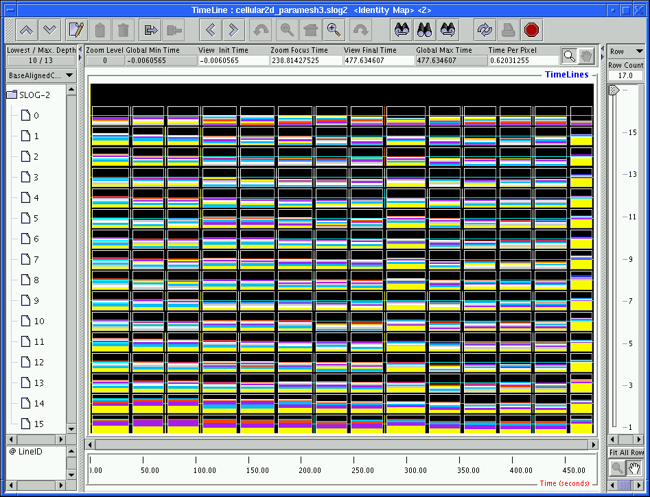

|

|
One of the questions that most MPI application developers always want to know is the overhead of MPI calls in their programs. Essentially they would like to know what is the communication overhead in their parallel programs. New SLOG-2 viewer provides a graphical answer to this question for most MPI profiling system. In MPE profiling system, MPI states are alway nested deeper than the user-defined states. Therefore disabling user-defined states and arrows in CumulativeExclusionRatio mode in the Timeline window still leaves all MPI exclusion ratios intact without distorted the collective meaning of exclusion ratios. Figure 4.4 shows a CumulativeExclusionRatio view in BaseAligned mode which looks like a 2-dimensional projection of a 3-dimensional histogram for a timeline vs time coordinate system. The base aligned feature is for easy comparison of preview states' heights. It becomes apparent from the figure that not only do we know the yellow state, i.e. MPI_Barrier, takes up most time in the program, we also know when and where MPI_Barrier consumes most time. The combination of disabling user-defined states and use of BaseAlignedCumulativeExclusionRatio Timeline view provides a powerful and convenient way to estimate MPI communication overhead. Together with the zoomable capability of the Timeline window, user can easily zoom in to identify the time and location of the bottleneck that causes the biggest communication overhead. For an overall estimate of MPI overhead, a histogram window over the whole duration of the timeline canvas can be obtained and is shown in Figure 4.5. The vacuum region in each timeline is assumed to be used by user computation.